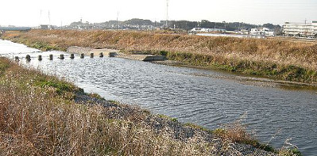

釣行日誌 故郷編
2009/2/5 許せ、キルウェル
「伊藤君、これ昼までにやっておいて」
一抱えもある書類を私の机の上に置いて部長が自分の席に戻ってゆく。こういう日に限って余分な仕事が入るものだ。今日は午後、休みを取って、昨日偵察しておいたコイを釣りに行く予定なのである。
シャカリキになってなんとか昼までに請求書と納品書を整理・入力し、１２時になるのと同時に会社を飛び出す。目指す川まで車を走らせながら、あのポイントに昨日のおじさんたちがいたらどうしようかなどと心配する。しかし、橋詰から堤防道路に乗り入れると、例の河川敷には誰の姿も見えず、ほっと安堵のため息が出る。
堰のすぐ手前に車を停め、お昼の弁当にする。が、しかし、なんとういことだ。弁当箱に箸を入れるのを忘れた。今日はフォーセップも持っていないので、仕方がない、手づかみで食べることにする。何の変哲もない唐揚げとレタスのおかずが、どことなく異国の味に感じられる。
手早く弁当をたいらげ、サーモスのお茶を二口飲んで、釣りの支度にかかる。しばらく使っていなかった愛用のキルウェル６番９ｆｔをつなぎ、ハーディをセットする。昨日買ったフロロの４号を取り出したものの、あまりの太さにびっくりしてしまい、結局３Xのリーダーを使うことにする。フライは、昨日の偵察の結果から、コイが水底にばかり注目していたようなので、水面下で勝負することとし、白のエッグフライを結び、小さめのインジケーターを付ける。ベストを着て、長靴を履き、まさかの転倒・水没に備えて携帯電話は車にしまっておく。新品のランディングネットを持っていざ出陣である。
身をかがめて忍び足で堤防の小道を降りると、すぐ横が堰堤である。コンクリートの上から上流の深みを見たところ、コイの姿は無い。にじりずさるようにして徐々に上流へ移動してゆくと、河川敷の草が無くなったあたりで、水中に魚影を見つけた。一つ、二つ、三つ。
『居た居た........』
ところが、コイの群はしきりと前後左右・上流下流に動き回っていて、定位することがない。今は身をかがめているからいいものの、キャストのために身を起して腕を振ろうものなら一発で見つかって群れは散ってしまうだろう。
『むむむ.......これは困った』
さらに厄介なことに、今身をかがめている河川敷には、水際までフトンカゴと呼ばれる、鉄線の網にゴロタ石を詰めた護岸が施されており、そのために草は少ないのだが、フックがそこに落ちると、いたるところ鉄線だらけのため、必ず引っかかってしまい、キャスティングの準備が非常に難しいのである。おまけに風はやや下流の対岸方向からこちらに向けて吹いており、ますます事態を困難にしていた。
せっかく午前中、頑張って仕事を終わらせてやってきたのに、これでは一回もキャストすることなく敗退か.....と弱気になる。
そうこう躊躇している最中にもコイの群れは目の前を右往左往しながら何回も往復し、気はあせるばかりである。どこかキャストできそうな場所はないかと探すと、対岸の下流側は砂地の岸になっているのが目についた。しかし、対岸に渡ってしまうと、太陽光線の関係で、いくら偏光グラスをかけていても、ほとんど魚影は確認できないということも予想された。しかしここでこのままキャストのチャンスを待っていても、どうにもらちが明かないとあきらめ、対岸に渡ることにした。再び身をかがめてじりじりと後ずさり、コイを驚かさないよう注意して河川敷の草むらに隠れつつ堰まで移動する。
堰の上は、コケや藻が付いて滑りそうだったが、水は浅かったのでなんとかゴム長靴で渡りきった。急角度のコンクリートを上ると、再び泥棒猫の如く砂地のポイントまで接近する。
案の定、こちら岸から見ると、水面は太陽を反射して、ほとんどコイの姿は確認できない。だが、河川敷から降りて砂州の上に立ったので、キャスティングは格段に楽になった。風向きも申し分ない。しばらく気配を消したあと、さっきコイの群れがいたあたりに、あてずっぽうでキャストする。水面に落ちた白いエッグフライが静かに沈んでゆき、インジケーターがゆっくり流れ始める。時おりコツコツと小さなアタリが出るが、あれは錘のガン玉が底をうっているのであろう。下流まで流して、再びブラインドのキャスティングを続ける。
５分、１０分、コイのアタリは無い。
２０分、３０分。何も反応は無い。
対岸の水中の様子はさっぱりわからないが、コイがいることは間違いないのだから、エッグフライが気に入らないのだろうか？ あるいは、コイがいると思っているのは私だけで、とっくの昔にキャスティングに驚いて群れは散ってしまったのだろうか？
『・・・・・・・・』
相変わらずインジケーターはそれらしく流れていくが、底ズレの小さなアタリばかりである。
『・・・・・・・・』
釣り始めてからおよそ１時間が経過した。
「よし！ 決めた！」
思わず声に出してからラインをリールに巻きとり、ロッドを半分にたたむ。再び堰を渡って車に戻り、一目散に近くのコンビニに向けて走り出す。食パンを買うのだ。（笑）
ローソンで超芳醇を１袋、150円で買い、目を三角にして釣り場に戻る。今度は最初のように、左岸の見やすい位置から狙うのだ。左手にフライロッド、右手にはネットと食パンを持って堤防を降りて行き、最初のポイントに忍び込む。
ここで、賢明なる読者の皆様は、作者の次の行動は食パンを撒いての偵察、あるいはチャミングかと予想されたと思われるが、完全に頭に血が上っている作者は、白のエボレスフライのエッグをクリッパーでむしり取り、露出したフライフックに水で湿らせた食パンをじかに付けるという行為に出てしまったのである。湿った食パンを手のひらでニギニギと丸める行為は、何か、非常に懐かしく感じられた。その上で、ティペットをフロロの４号にし、テーパーリーダーのかなり太い所にブラッドノットで結びつけた。これで支度は完璧である。
もちろん通常のフライキャスティングは出来ないので、あらかじめリーダーとラインとを十分に手繰り出しておき、ヨイショッと食パンの団子を水中に放り込む。チャボンと水音を立てて沈み、底に着いた食パンが白く丸く見える。ラインを静かに引き戻して、弛みを無くす。これで勝負だ。
しばらくすると、コイの群れがこちらにやって来るのが見えた。鈍い黄金色の潜水艦のような魚体が１尾、徐々に食パン団子に近づいてゆく。
『そこだっ！ 食えっ！』
「！！！」
なんとしたことだ！ ゆっくりと食パン団子に近づいたそのコイは、まるっきり無視して何事も無かったかのように食パンの上を泳ぎ去ってしまった。
うーん、何が悪いのか？ やっぱりただの食パンではお気に召さないのか？ さりとて練り餌にまでエスカレートするのはやはり．．．．．などと逡巡してみても始まらない。穏やかな冬の日差しの中、河川敷を風が吹き抜けてゆく。フィッシングベストにフライロッド、傍目にはのどかな釣りの風景だが、この釣り人の心中はおだやかでない。何より問題は、フライラインの先から伸びた４号のフロロリーダーの先には、食パン団子が付けられていることにある。「餌釣りよりもフライフィッシングの方が格が上だ」などと言うつもりはないが、フライの仕掛けで食パンを使っていることに問題があるのだ。それ故に、誰も居ないにも関わらず、どこかにうしろめたさが残る。これで、他のフライフィッシャーマンか、あるいは昨日のおじさん達が登場したらどんな顔で応対すれば良いのだ？

その後も数回、コイの群れは食パンの上を泳ぎ過ぎたのだが、ついに団子に食らいつくことは無かった。時刻は午後四時。風も強くなってきた。ここらが潮時かと、こわばった腰を上げる。ついに濡れることの無かったランディングネットに、食パンの袋を入れ、とぼとぼと堤防の小道を登る。ロッドをたたみ、車のトランクに入れる時、キルウェルとハーディが、無言の抗議をしているように見えた。
釣行日誌 故郷編 目次へ
サイトマップ
ホームへ
お問い合わせ